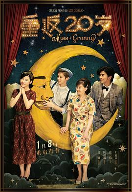

重返20岁
又名：重返二十岁 / 奇怪的她中国版 / 20세여 다시 한 번 / Miss Granny / 20 Once Again
作品信息
| 导演 | 陈正道 |
| 编剧 | 林小革 / 任鹏 / 申东益 / 洪允贞 / 董熹璇 / 黄东赫 |
| 主演 | 杨子姗 / 归亚蕾 / 陈柏霖 / 鹿晗 / 王德顺 / 赵立新 / 李宜娟 / 尹航 / 夏星 / 林丛 / 杨青 / 周雨彤 |
| 类型 | 喜剧 / 爱情 / 奇幻 |
| 制片国家/地区 | 中国大陆 / 韩国 |
| 语言 | 汉语普通话 |
| 上映日期 | 2015-01-08(中国大陆) / 2015-01-23(中国台湾) |
| 片长 | 131分钟 |
| IMDb | tt4344878 |
| 官方小站 | 写下我的20岁宣言 |
最后一次看到是 2026-08-12T21:12:18+08:00 · 豆瓣原页